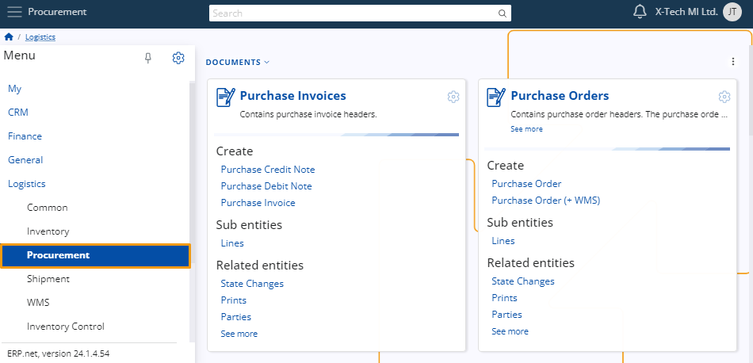
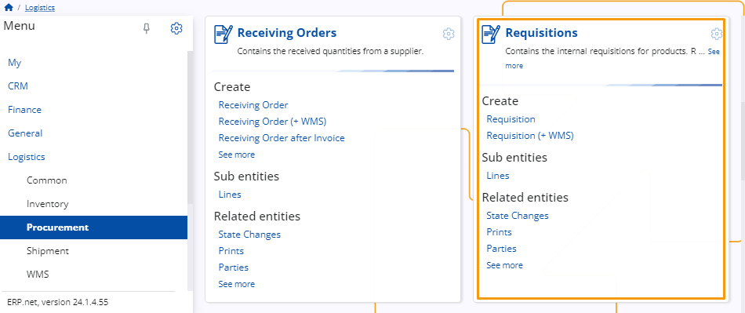

Procurement
This submodule serves as a comprehensive tool for overseeing and optimizing the sourcing of materials within the warehouse environment.
It plays a pivotal role in streamlining the entire procurement process, from initial supplier selection to final product acquisition.
By leveraging this space, you can effectively track and manage all aspects of procurement, including supplier relationships, purchase order creation, inventory replenishment, and receipt of goods.

Definitions
Suppliers
First, it's necessary to establish one or more suppliers responsible for delivering products to the warehouse.

Documents
Requisitions
This panel contains internal requisitions for products, which are then consolidated by the purchase department into purchase orders.
A requisitions requires you to specify which store will get your order, the party that will deliver it and all the products that you need.
When all the details are provided and a subsequent offer is accepted, you can proceed with creating a purchase order to confirm your purchase.

Purchase Order
This panel allows you to create a purchase order which is sent to suppliers to notify them of an order for goods or services.
It includes the respective invoice and is handed to a store worker responsible for handling the delivered products.
Purchase Invoice
To finish a purchase request, you also need to create its respective invoice using this panel.
A purchase invoice document requires the provision of a delivery warehouse and a supplier responsible for fulfilling the order.
Depending on the chosen supplier, additional information such as credit limits and delivery times may be specified.
Learn more about Procurement here;
Note
The screenshots taken for this article are from v24 of the platform.